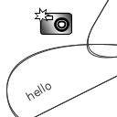

KW 18 2024
Graphics2D Implementierung für Java mit verlegtem Koordinatenursprung
01.05.2024

Es gibt seit vielen Jahren immer mal wieder Leute, die im Internet fragen, ob man in Javas diversen Methoden zum Zeichnen von Graphiken das Koordinatensystem so ändern könnte, dass sich der Koordinatenursprung links unten befindet und die positive y-Achse nach oben weist. Meist sind die Antworten dann, dass eine Affine Transformation eingeschaltet werden solle, die das Bild spiegelt.
Unerwartete Probleme bei der Software Raid5 Erweiterung
01.05.2024

Ich bin an die Grenzen meiner Storagelösung gestoßen - es musste mehr Platz her...


Tags
Manche nennen es Blog, manche Web-Seite - ich schreibe hier hin und wieder über meine Erlebnisse, Rückschläge und Erleuchtungen bei meinen Hobbies.
Wer daran teilhaben und eventuell sogar davon profitieren möchte, muß damit leben, daß ich hin und wieder kleine Ausflüge in Bereiche mache, die nichts mit IT, Administration oder Softwareentwicklung zu tun haben.
Ich wünsche allen Lesern viel Spaß und hin und wieder einen kleinen AHA!-Effekt...
PS: Meine öffentlichen GitHub-Repositories findet man hier - meine öffentlichen GitLab-Repositories finden sich dagegen hier.